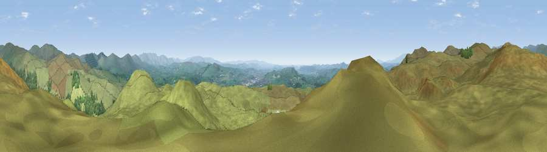

Viewpoint near Garnett Bridge
#6438 in England · top 28% of its area beats it · near Garnett Bridge · open accessWhere it is
The exact computed spot (SD 50425 99625). Click the marker for map links.
Public access: this spot lies on mapped open-access land (CRoW Act 2000) — you may roam here on foot. Computed from Natural England's CRoW access layer and OpenStreetMap rights of way — not the legal definitive map. Always verify locally.
The view, rendered

A 360° render of this exact spot computed from the terrain model, tree cover and land cover — summer colours, afternoon light, calibrated against photographs of famous viewpoints. Real trees, hedges and buildings will differ in detail.
The panorama
Grey silhouette: terrain skyline in each direction (720 bearings, Earth curvature and refraction included). Dashed green: skyline with trees (+15 m) and buildings (+8 m) as obstacles. Blue strip: how far the ground is visible on each bearing.
Where the view opens
Wedge length = distance to the farthest visible ground on that bearing (vegetation-aware). Rings at 10, 25 and 50 km.
What fills the view
93% grassland · 6% woodland ·
Angular shares of the visible panorama (visual magnitude), not map area. Landscape diversity 0.14 (0–1 Shannon).
Key numbers
More beautiful places nearby
The staircase of upgrades: each row has a higher view potential than everything closer. Driving times are estimates from straight-line distance, calibrated against real road routing — check an actual route before setting out.
| Place | Direction | Drive | Score |
|---|---|---|---|
| Ulgraves | E · 1 km | ~2 min | 69.7 |
| Potter Fell SW | W · 1 km | ~4 min | 73.8 |
| Viewpoint near Staveley | WNW · 2 km | ~6 min | 75.1 |
| Viewpoint near Sadgill | N · 4 km | ~9 min | 77.3 |
| Viewpoint near Garnett Bridge | NNE · 5 km | ~10 min | 77.6 |
| Sallows | WNW · 8 km | ~16 min | 78.0 |
| Sour Howes | WNW · 8 km | ~17 min | 78.4 |
| Kentmere Pike | NNW · 9 km | ~18 min | 78.7 |
54.38968, -2.76494 · source: screening · position refined by local search. Computed location — check access rights before visiting.